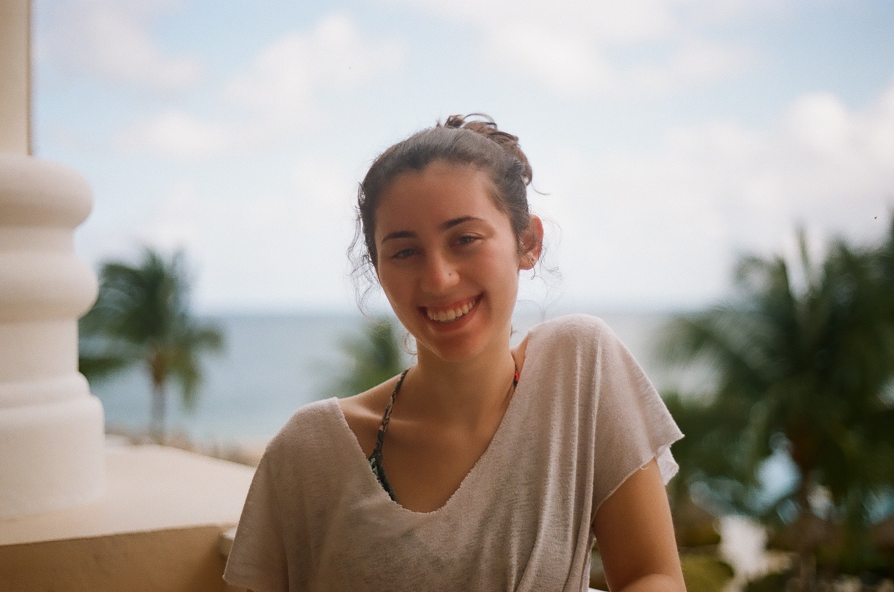

Storyteller in the making
I researched and contacted synagogues and Jewish organizations across the country. I also co-ran social media and the website for the Spy Behind Home Plate film.
I transcribed archival footage and audio and researched and catalogued archival still photographs.
I provided broadcast news services through a nightly aired television program by running cameras and the teleprompter to ensure anchors relayed correct information.
I assisted in the production process of short films by working with actors and directors to edit scripts and act in films.
Bachelor Degree, Broadcast Journalism, University of Maryland, College Park, 2020
Adobe Premier
Adobe Photoshop
Adobe Bridge
MS Word
MS PowerPoint
FileMaker Pro
Operate DSLR and Broadcast Cameras